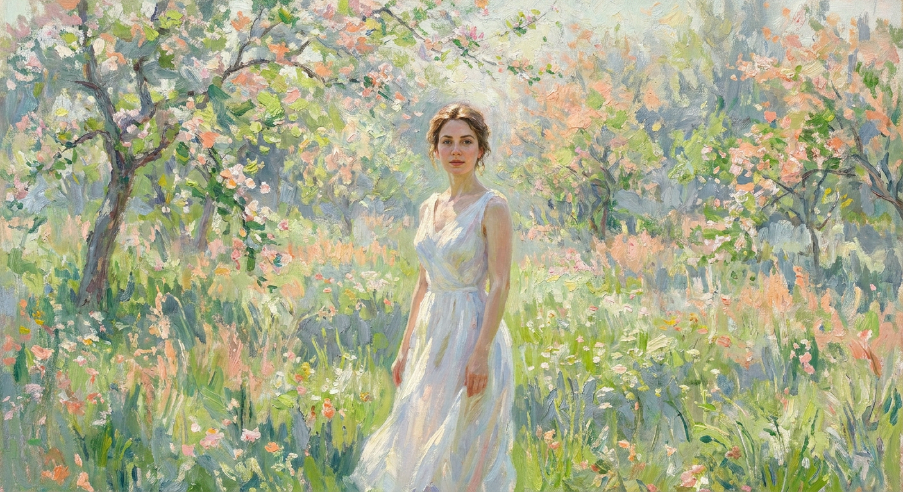
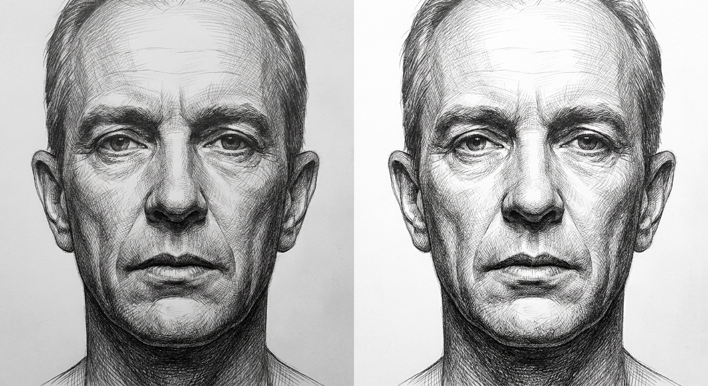
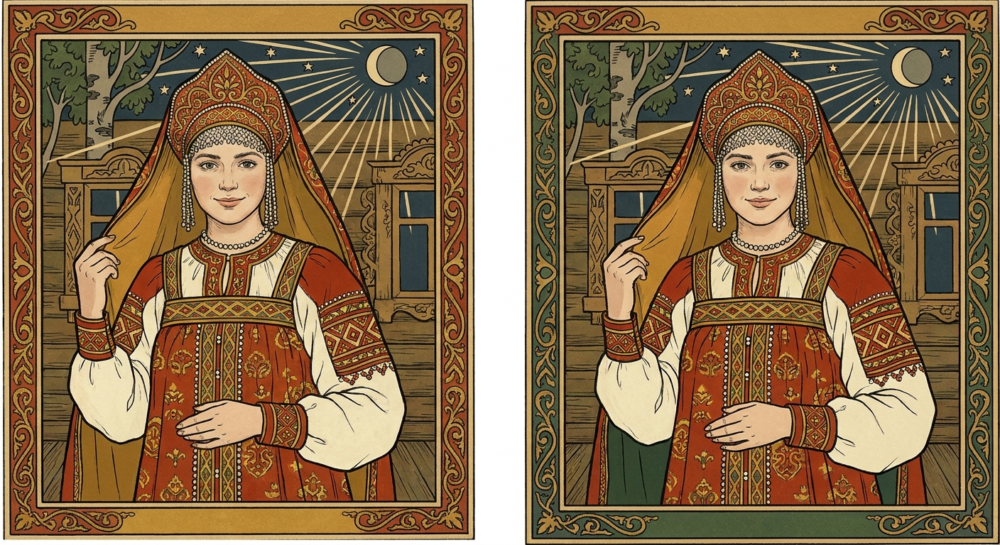
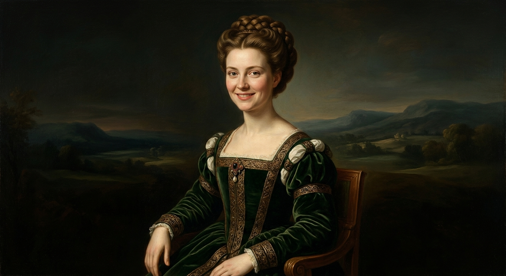
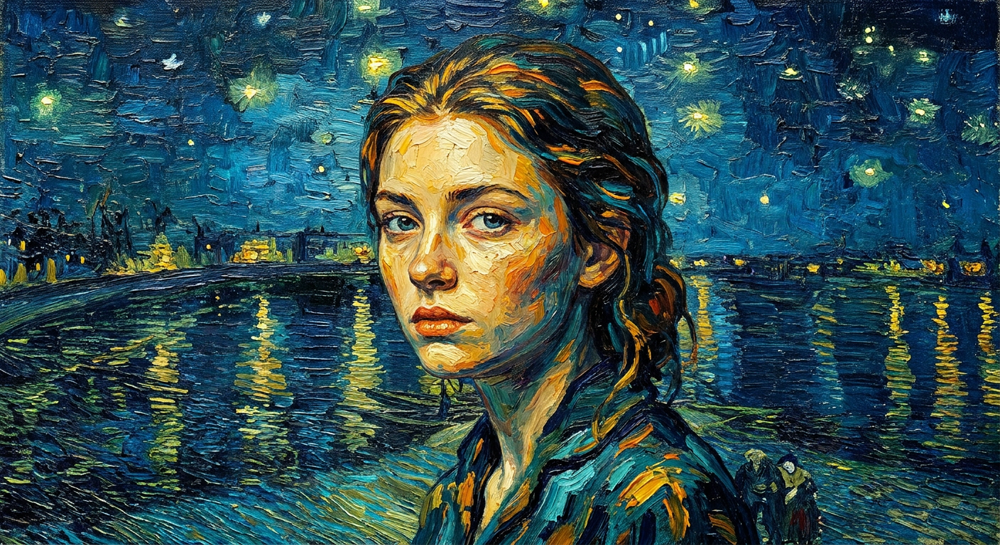
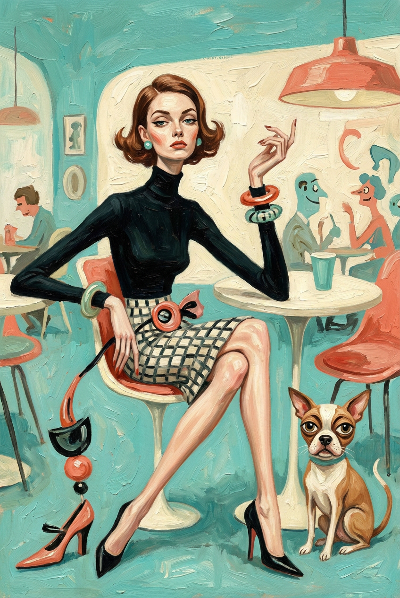
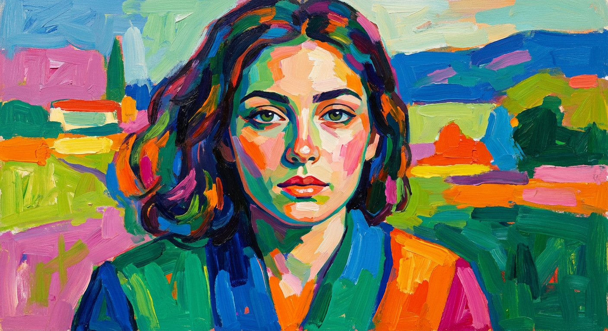
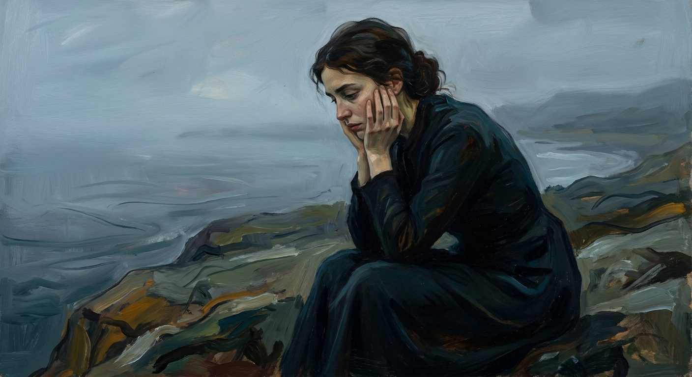
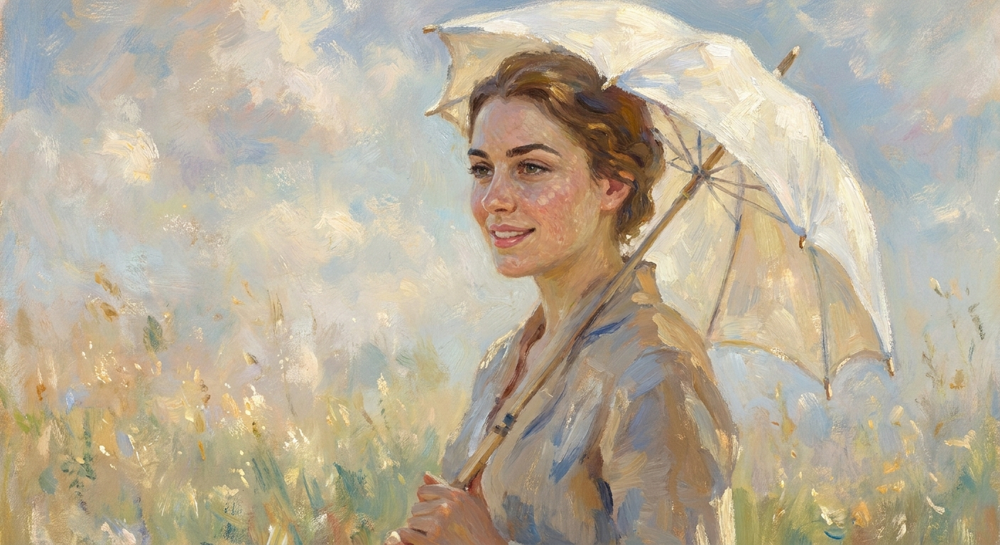
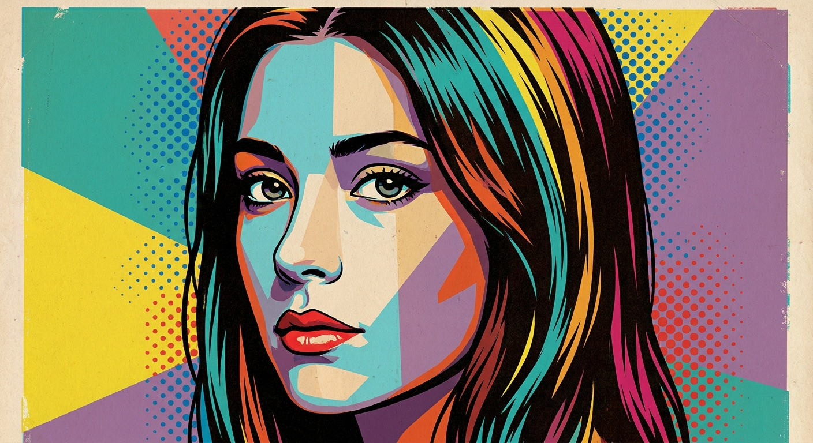

ИИ-фото в стиле картин: 10 промптов для нейросети

Обычный портрет быстро превращается в случайную картинку: нейросеть меняет лицо, позу, одежду и даже настроение сцены. Хороший промпт фиксирует композицию, свет и характер мазков, поэтому результат больше похож на задуманный художественный образ.
В подборке — 10 готовых сценариев: от импрессионистских пейзажей Моне и тревожной меланхолии Мунка до русской книжной иллюстрации, фовизма, сюрреализма, карандашного рисунка и поп-арт-постера.
Как сгенерировать такое фото: пошагово
Нужен снимок анфас при ровном свете, лицо в кадре целиком, без тёмных очков и головных уборов. Разрешение от 1000 пикселей по короткой стороне. Чем чётче исходник, тем точнее модель повторит черты.
Выберите сценарий ниже и нажмите «Копировать» — текст уйдёт в буфер целиком, вместе с командой сохранения внешности. Эта команда стоит первой строкой и отвечает за то, чтобы на выходе было ваше лицо, а не случайное.
Кнопка «Сгенерировать» рядом с каждым промптом открывает модель в новой вкладке. Nano Banana Pro работает с референсом лица — в отличие от моделей, которые генерируют портрет с нуля и узнаваемость теряют.
Промпт — в поле ввода, портрет — через загрузку референса. Порядок значения не имеет, но без референса команда сохранения внешности работать не будет: модели нечего сохранять.
Для сторис и ленты берите 9:16, для превью и обложек — 4:3. Первый результат редко идеален: если поза или свет ушли не туда, поправьте соответствующую часть промпта и запустите заново. Обычно хватает двух-трёх итераций.
10 промптов для генерации
1. Весенний портрет Моне
Строго сохранить внешность по загруженному референсу: черты лица, пропорции, мимику и текстуру кожи без изменений. Создай живописную сцену в духе импрессионистской картины Клода Моне «Весна». Композицию, перспективу, дневное освещение, фон, масштаб и положение фигуры оставь такими же, как в исходной работе: девушка находится в центре переднего плана, её тело ориентировано в прежнем направлении, а ритм листвы и цветов окружает фигуру без перестановок. Используй лицо девушки с референса, точно передай форму глаз, бровей, носа, губ, овал, пропорции и естественную мимику. Сохрани исходную позу и размер относительно растений. Добавь короткие дробные мазки, мерцающий воздух, мягкую дымку и фактуру холста. Палитра весенняя: свежая зелень и салатовые листья, пастельные розово-персиковые и светло-жёлтые цветы, тёплые блики на волосах и ткани, прохладные воздушные тени.
2. Академический карандашный портрет

Строго сохранить внешность по загруженному референсу: черты лица, пропорции, мимику и текстуру кожи без изменений. Преобразуй загруженную фотографию в академический рисунок, выполненный графитным карандашом на чистом белом листе. Сохрани узнаваемость человека, точные пропорции лица, форму глаз, носа, губ и естественное выражение. Работай тонкой, уверенной линией: подробно прорисуй контуры, волосы, складки одежды и мелкие анатомические детали. Объём передай классической штриховкой и перекрёстной штриховкой с разной плотностью линий, особенно в тенях под скулами, подбородком, носом и волосами. Сделай высокий контраст между белой бумагой и графитовыми участками, но не превращай рисунок в комикс. Никаких цветных пятен, фотореалистичной кожи или цифровой гладкости. Итог должен напоминать работу ученика сильной художественной школы: аккуратная конструкция, чистая бумага, детальная линия, высокое качество и выразительный диапазон светотени.
3. Сказочная иллюстрация Билибина

Строго сохранить внешность по загруженному референсу: черты лица, пропорции, мимику и текстуру кожи без изменений. Нарисуй портрет девушки как старинную русскую книжную иллюстрацию в духе Ивана Билибина. Используй лицо с референса, сохрани индивидуальные черты, пропорции, форму глаз, бровей, носа, губ и спокойную естественную мимику. Девушка показана в полуобороте 3/4, с живым взглядом и мягкой улыбкой. Одень её в богато расшитый русский сарафан или платье, добавь бусы, платок либо кокошник. В орнаментах используй растительные завитки, ромбы, геометрические мотивы, солнечные знаки, жемчужные и золотистые акценты. Одна рука аккуратно поддерживает подол ткани, руки полностью помещаются в кадре. Сделай тонкую графичную обводку, плоские цветовые заливки без микротекстуры кожи, ручную гуашевую или темперную раскраску. Добавь ощущение гравюры на дереве, аккуратный штрих, декоративную орнаментальность, тёплую палитру и высокую детализацию.
4. Портрет в духе Ренессанса

Строго сохранить внешность по загруженному референсу: черты лица, пропорции, мимику и текстуру кожи без изменений. Создай поясной портрет девушки как классическую масляную картину эпохи Ренессанса. Посади модель в повороте 3/4 и выстрой пирамидальную композицию. Лицо возьми с загруженного референса: без изменения индивидуальных черт, формы глаз, бровей, носа, губ, овала, пропорций и естественной мимики. Выражение спокойное, благородное, с едва заметной улыбкой; анатомия реалистичная, кожа проработана мягкими живописными полутонами. Одень девушку в платье или камзол XVI века из шерсти или бархата, добавь драпировки, воротник, кружево, пояс и небольшую брошь. Волосы уложи в натуральную классическую причёску XVI века. На фоне сделай глубокий нейтральный тёмный тон либо атмосферный пейзаж с далёкими холмами или городом, мягкой перспективой и лёгкой глубиной. Свет рассеянный, тени плавные, поверхность холста матовая.
5. Ночная река Ван Гога

Строго сохранить внешность по загруженному референсу: черты лица, пропорции, мимику и текстуру кожи без изменений. Сделай художественный портрет или полуфигуру девушки в экспрессивной манере Винсента Ван Гога, ориентируясь на настроение и палитру «Звёздной ночи над Роной». Лицо должно оставаться узнаваемым по референсу: точно передай глаза, брови, нос, губы, овал, пропорции и естественное выражение. Позади модели изобрази тёмно-синее и бирюзово-голубое небо с закручивающимися вихрями, яркими звёздами и лунным сиянием. Внизу — ночная река или тёмная водная гладь в сине-зелёных тонах, где отражаются светящиеся отблески. На лице, волосах и одежде добавь тёплые жёлтые и оранжевые акценты. Используй выразительные спиралевидные мазки, густой импасто, заметную фактуру холста, драматический контраст и кинематографичную композицию. Не допускай гладкой кожи, пластика, CGI, 3D, фотореализма без мазков и размытия.
6. Сюрреалистичный дуэт с питомцем

Строго сохранить внешность по загруженному референсу: черты лица, пропорции, мимику и текстуру кожи без изменений. Используй изображение A как референс личности человека, а изображение B — для внешности домашнего питомца. Покажи их вместе в стильном ретро-кафе как сильно стилизованную сюрреалистическую иллюстрацию в эстетике редакционной графики середины XX века. Сохрани узнаваемые черты человека и животного, но переведи обоих в преувеличенную живописную манеру. У человека вытянутая фигура, очень длинная шея и конечности, слегка узкое лицо, холодное отстранённое выражение deadpan. Одежда причудливая, элегантная и нарочито странная. Допусти тонкие искажения анатомии, элементы whimsical lowbrow surrealism и изысканной абсурдности, но не потеряй сходство с референсами. Интерьер кафе сделай ретро: мебель, стойка, мягкий свет и декоративные детали середины века. Используй масляно-кистевые текстуры, выразительные мазки, приглушённые винтажные цвета и композицию журнальной обложки.
7. Фовистский портрет

Строго сохранить внешность по загруженному референсу: черты лица, пропорции, мимику и текстуру кожи без изменений. Напиши портрет девушки в манере фовизма: это должна быть картина, похожая на фотографию по точности деталей, но не по степени реализма. Сохрани лицо с референса, включая индивидуальные черты, форму глаз, бровей, носа, губ, овал, пропорции и естественную мимику. Кожу и волосы передай смелыми цветовыми плоскостями: используй зелёно-голубые, оранжевые и розовые участки, не привязываясь к натуральным оттенкам. Добавь выразительные глаза и яркий макияж без карикатурности. Одежда простая по форме, но построена на контрастных блоках изумрудного, кобальтового, оранжевого и фуксии. Фон — декоративный или похожий на стилизованный пейзаж, собранный из крупных плоских ярких участков с резкими цветовыми столкновениями. Видимые свободные мазки должны идти в разных направлениях, холст — иметь живую фактуру. Не используй гладкую пластиковую поверхность и фотографические градиенты.
8. Меланхолия в духе Мунка

Строго сохранить внешность по загруженному референсу: черты лица, пропорции, мимику и текстуру кожи без изменений. Перенеси девушку из референса в сцену, стилизованную под картину Эдварда Мунка «Меланхолия». Сохрани исходную композицию: одинокая фигура сидит в центре или на переднем плане, плечи ссутулены, голова опущена, вид профиль или полупрофиль, руки расслаблены в грустной позе. Размер фигуры, силуэт, ракурс и положение в кадре не меняй. Лицо должно оставаться узнаваемым: точно передай глаза, брови, нос, губы, овал, пропорции и естественную мимику, не превращая её в другого человека. Оставь туманный приглушённый пейзаж с низким горизонтом, пустынным пространством и холодным рассеянным светом. Палитра — бледные сине-серые, зелёно-серые и коричневые оттенки, затемнённые зоны и редкие тёплые акценты. Передай экспрессионистское напряжение дрожащими контурами, вибрирующими мазками, неровной фактурой и ощущением внутренней тревоги.
9. Дама с зонтиком Моне

Строго сохранить внешность по загруженному референсу: черты лица, пропорции, мимику и текстуру кожи без изменений. Создай сцену в манере Клода Моне, вдохновлённую картиной «Дама с зонтиком, повернутая влево». Не меняй исходные фон, перспективу, ракурс, освещение, размер фигуры и композиционное расположение зонтика. Замени только главную героиню на девушку с референса, сохранив её индивидуальные черты, форму глаз, бровей, носа, губ, овал лица, пропорции и естественную мимику. Корпус направлен влево, взгляд и поворот тела совпадают с исходной сценой, контуры зонтика остаются прежними. Используй мягкие короткие мазки, атмосферную перспективу, лёгкую воздушную дымку и мерцающий дневной свет. Одежда и поле вокруг неё — в тёплых нейтральных тонах, тени — холодные голубовато-серые. Добавь золотистые блики на зонтике и ткани, живую фактуру холста, мягкое смешение оттенков и ощущение ветра в открытом пейзаже. Не делай изображение резкой фотографией.
10. Цветной поп-арт-постер

Строго сохранить внешность по загруженному референсу: черты лица, пропорции, мимику и текстуру кожи без изменений. Сделай плотный поп-арт-постер с крупным планом лица и плеч девушки. Голова повернута вбок, почти в 3/4 к зрителю, выражение спокойное, лицо занимает большую часть кадра. Используй референс и точно сохрани личность, форму глаз, бровей, носа, губ, овал лица, пропорции и естественную мимику. Выполни изображение в технике сериграфии с эффектом трафаретной печати: лицо и волосы разделены на самостоятельные цветовые сектора, без реалистичных градиентов. Применяй жёсткие границы между зонами, заметные несовпадения печатных слоёв и колор-блоки. В палитре должны присутствовать бирюзовый и циан, пудрово-бежевый, голубой, пурпурный и фуксия, оранжевый и шафрановый, жёлтый и красный. Добавь графичные контуры, плакатную контрастность и слегка зернистую печатную фактуру. Композиция минималистичная, фон не отвлекает от портрета, поверхность не выглядит глянцевой или 3D.
Что важно учесть в этом стиле
ИИ лучше справляется с художественной стилизацией, когда в запросе отдельно описаны композиция, поза, свет, палитра и фактура. Если нужен перенос человека в уже существующую сцену, сначала зафиксируйте размер фигуры, направление корпуса и положение ключевых объектов.
Для портрета полезно указать тип кадра: крупный план, полуфигура или поясной портрет. Референс не гарантирует идеальное сходство с первой попытки, поэтому лицо обычно приходится уточнять через несколько генераций и аккуратный выбор наиболее удачного результата.
Идеи для вариаций
- Поменяйте время суток в сцене Моне: утренний туман, золотой час или пасмурный полдень.
- Для портрета Ренессанса добавьте книгу, веер, музыкальный инструмент или герб на фоне.
- В фовистской версии замените декоративный фон на комнату с цветными стенами и крупными растениями.
- Для поп-арта задайте четыре печатных слоя, эффект смещения трафарета и крупное зерно бумаги.
- В сюрреалистичной сцене поменяйте кафе на вокзал, библиотеку или гостиничный холл 1950-х годов.
Как собрать свой промпт
Начните с формата и главного объекта: например, «поясной портрет девушки в повороте 3/4» или «фигура в центре пейзажа». Затем добавьте референс, одежду, позу, фон и источник света. В последнем блоке опишите художественный язык: размер мазка, степень детализации, материал поверхности и ограничения вроде «без фотореалистичной кожи».
Если важна композиция оригинала, перечислите, что нельзя менять: перспективу, горизонт, масштаб фигуры, направление взгляда и положение предметов. Для стабильности результата генерируйте 4–8 вариантов, после чего отдельно исправляйте лицо, руки или фон. Для печатных стилей полезны слова «плоские заливки», «жёсткие границы цвета» и «смещение слоёв сериграфии».
Ошибки, из-за которых кадр не получается
- Слишком общий запрос. Фраза «сделай как Моне» не фиксирует позу, свет и масштаб фигуры, поэтому модель начинает свободно пересобирать сцену.
- Конфликт стилей. Сочетание «фотореалистичная кожа» и «плоская гравюра» часто даёт грязные переходы и неравномерную фактуру.
- Нет описания референса. Одной фотографии может быть мало: уточните, какие черты лица и элементы внешности нельзя менять.
- Перегруженный фон. Множество объектов перетягивает внимание с портрета и ухудшает сходство.
- Неподходящий negative prompt. Для живописи убирайте CGI, пластик и гладкую кожу, а для карандаша — цвет, глянец и цифровые градиенты.
Частые вопросы
Как сделать такое ИИ-фото бесплатно?
Попробуйте Kandinsky и Шедеврум: они подходят для экспериментов с текстовым описанием, но работа с референсом, точное сходство лица и перенос композиции могут быть ограничены. В Krea AI и Arena.ai обычно проще тестировать стили и сравнивать варианты, однако доступность функций, лимиты и качество обработки референсов меняются. Для сложных сцен понадобится несколько попыток и ручной отбор результата.
Почему нейросеть меняет лицо на картине?
Модель одновременно выполняет две задачи: переносит художественную манеру и сохраняет внешность. При слишком сильной стилизации сходство теряется. Уточните, что лицо, пропорции и мимика должны остаться прежними, снизьте силу стилизации и используйте более чёткий портретный референс.
Как сохранить позу и композицию оригинальной картины?
Опишите не только название работы, но и положение фигуры, размер относительно кадра, направление корпуса, линию горизонта, перспективу и расположение крупных предметов. Если сервис поддерживает контроль позы или композиции, подключите эти инструменты отдельно от референса лица.
Можно ли использовать такие изображения в коммерческих проектах?
Проверьте правила конкретного сервиса и статус исходного произведения. Для картин старых мастеров авторские права часто уже истекли, но цифровая репродукция, фотография экспоната и логотипы могут иметь отдельные ограничения. Если в кадре есть лицо другого человека, нужно его согласие на использование изображения.